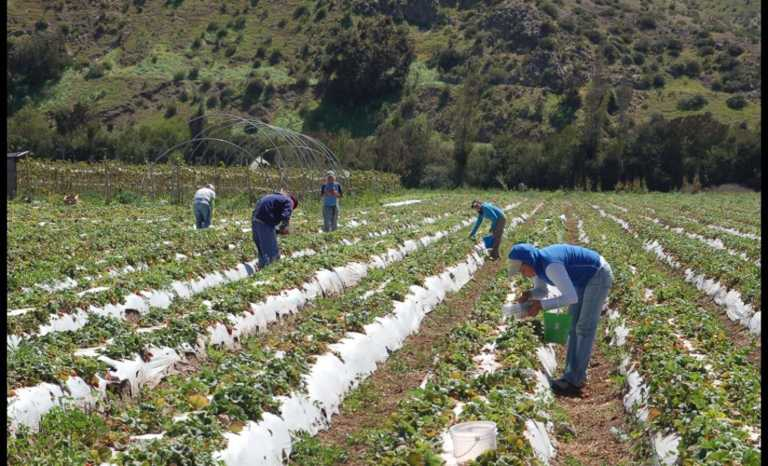

El proyecto busca mejorar las condiciones de vida de los habitantes de la region de
coquimbo.

En la actualidad se evidencia un fuerte crecimiento de la automatización de las labores agrícolas atendiendo a la
evolución tecnológica y a la expansión poblacional del planeta. Según la FAO (Organización de las Naciones Unidas
para
la Alimentación y la Agricultura):
La mecanización agrícola puede aumentar la productividad tanto de la tierra como de la mano de obra, incluso en
las
explotaciones agrícolas en pequeña escala (...) Las tecnologías de la información y la comunicación modernas
ofrecen a
los agricultores múltiples opciones para comprar insumos, vender productos y mejorar su acceso a la información
[1].
Esta modernización del campo, y de las tareas que allí se realizan, ha permitido aseverar que el sector
agroindustrial
es uno de los candidatos más fuertes para la aplicación de loT en la próxima década [2]. En esencia, las
soluciones
loT se visualizan como el paso a seguir para la modernización debido a la demanda que afronta el campo y el sector
agricultor [3]. Según algunos estudios, se espera que la clave para aumentar la producción agrícola sea la
aplicación
de tecnologías loT que lograrían incrementar en un 70% la producción global de comida, lo que generaría un impacto
positivo para el año 2050, en el que se estima una población de 9.5 billones de personas [4].
Por lo anterior, pensar en el desarrollo de sistemas inteligentes, modernos y con plataformas multimedia para el
acceso de diferentes actores del sector agrícola [5], indudablemente lleva a plantearse un diseño que posea
atributos
tales como modularidad, flexibilidad, integrabilidad, programabilidad, configurabilidad, escalabilidad e
interoperabilidad [6].
A partir de lo anterior, se estima que para el año 2020 existirán conectados 50.000 millones de objetos
inteligentes
[7], los que se intercomunican en redes, mediante el internet de las cosas y a través de los datos en la nube [8].
La
implementación de este tipo de interconexiones, basadas en las TIC, permite recolectar, analizar y distribuir
información [9], lo que conlleva a obtener información detallada de una situación en particular.